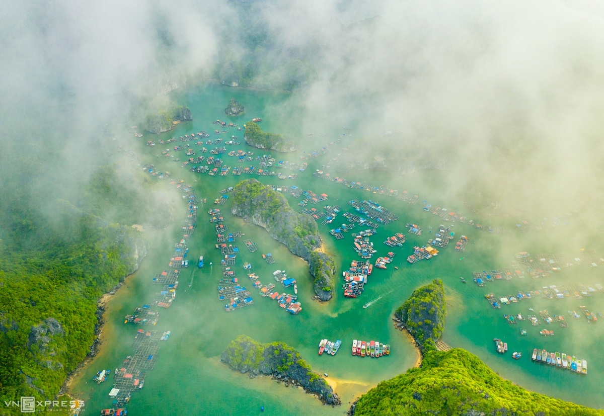
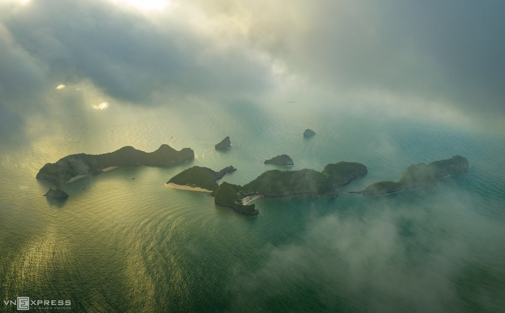
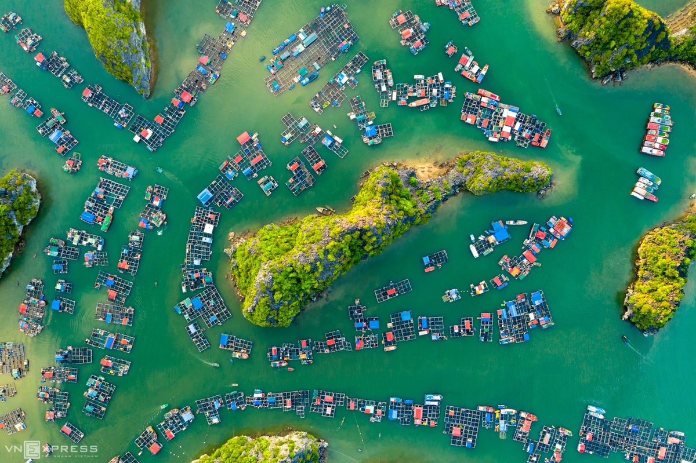
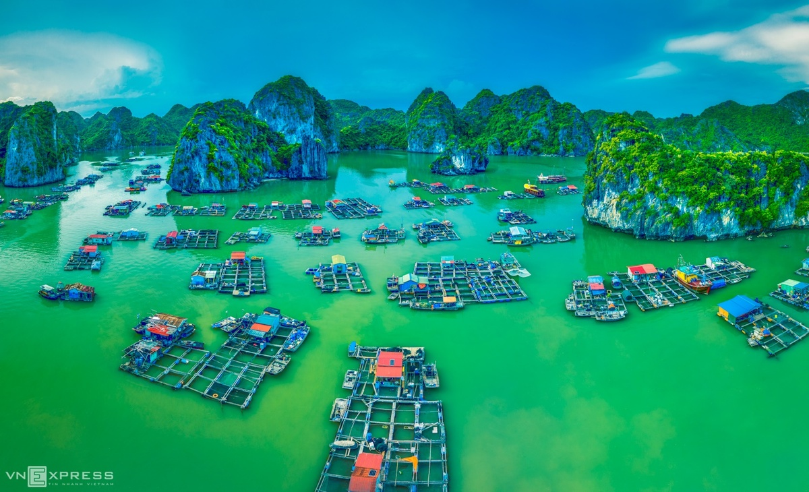

Vịnh Lan Hạ từ trên cao
Vịnh Lan Hạ sáng sớm
Vịnh Lan Hạ trong làn sương giăng lúc gần 6h sáng. Vịnh rộng hơn 7.000 ha, nằm bao quanh quần đảo Cát Bà và liền kề với vịnh Hạ Long. Bức ảnh nằm trong bộ ảnh Cảnh sắc vịnh Lan Hạ do tác giả Phạm Huy Trung (TP HCM), nhiếp ảnh gia của Socom Media thực hiện, trong thời gian du lịch tại thành phố hoa phượng đỏ vào đầu tháng 6/2020.
Những đảo đá vôi phủ đầy cây xanh và thảm thực vật bồng bềnh trong sương mây. Vùng vịnh Lan Hạ nước lặng, có khoảng 400 hòn đảo lớn nhỏ và hiện là thành viên của Hiệp hội Câu lạc bộ Các vịnh đẹp nhất thế giới (MBBW).
Làng nổi Cái Bèo
Một trong những điểm tham quan tại vịnh Lan Hạ là làng nổi Cái Bèo, nằm giữa thung lũng núi đá vôi. Đây là một trong những làng chài lớn nhất nước, với 300 hộ dân mưu sinh trên các “ngôi nhà nổi bằng phao”, chủ yếu nuôi trồng và đánh bắt thủy sản.
Du khách đến Cái Bèo trải nghiệm cảnh sinh hoạt kiếm sống của người dân chài lưới và có cơ hội tìm hiểu về lịch sử của làng chài này.
